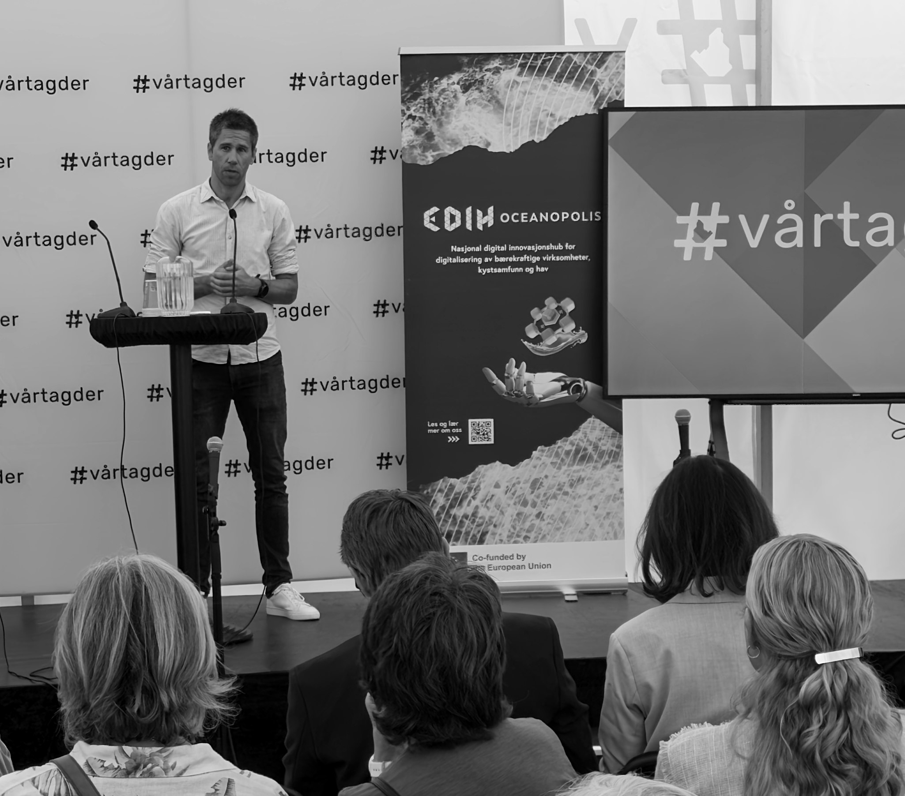

Praktisk KI i arbeidslivet
Mennesker først. Teknologi som virker.
Jeg hjelper virksomheter å bruke KI på en måte som sparer tid, styrker kvaliteten og er trygg å stå i.
Media
NRK-intervjuene og statsrådbesøket gir det raskeste bildet av arbeidet mitt med praktisk KI.
Statsrådbesøk
Møte med Karianne Tung
Digitaliseringsminister Karianne Tung besøkte Kristiansand kommune for å se praktisk bruk av KI i arbeidshverdagen.
«Det å se hvordan ansatte i Kristiansand kommune bruker kunstig intelligens for å forenkle og effektivisere arbeidshverdagen, er til stor inspirasjon for resten av landet.»— Karianne Tung, digitaliserings- og forvaltningsminister
Hva jeg tilbyr
Tre typiske måter jeg bidrar på.
KI i praksis – kurs og foredrag
Praktisk KI forklart enkelt, med eksempler folk kjenner igjen fra arbeidshverdagen. Passer for ledere, fagmiljøer og ansatte som vil raskt i gang.
Arbeidsflyt, effektivitet og kvalitet
Jeg hjelper virksomheter å finne hvor KI faktisk kan spare tid og heve kvalitet. Målet er bedre arbeid, ikke mer støy.
KI-agenter og kunnskapsarbeid
For deg som vil jobbe smartere med tekst, research, struktur og egne KI-støttede arbeidsflyter. Alltid med kilder, vurdering og menneskelig kontroll.
Kunder og oppdrag inkluderer: Sør Bygg (Farsund), Sykkelguttane og Tirna fagskole.
Innsikt
Noen perspektiver som går igjen i arbeidet mitt.
KI må gi bedre arbeid
Effektivitet er først verdifullt når kvaliteten følger med. Det handler om å bruke KI der den faktisk hjelper folk å gjøre klokere valg.
Læring skjer i praksis
Folk trenger ikke flere store ord om teknologi. De trenger konkrete arbeidsmåter de kan prøve, forstå og forbedre sammen.
Trygg bruk krever dømmekraft
KI må kobles til fag, kilder og ansvar. Da blir verktøyet en støtte for mennesker, ikke en snarvei rundt vurdering.
Om meg
Jeg er HR- og HMS-rådgiver i Kristiansand kommune, statsviter og snart ferdig utdannet sosionom. Jeg jobber med å gjøre KI praktisk, forståelig og nyttig for folk som har ekte oppgaver å løse.
Rollen min er å være bindeledd mellom fag, mennesker og tekniske miljøer. Jeg holder kurs, foredrag og rådgivning gjennom eget foretak, og er medgrunnlegger av KI-geriljaen og fagansvarlig for KI i Vi Bygger Sammen (VIBS).
Tilnærming
Praktisk nytte
Vi starter med arbeid som faktisk tar tid, skaper friksjon eller trenger høyere kvalitet.
Faglig dømmekraft
KI skal støtte faget, ikke erstatte det. Kilder, vurdering og ansvar må være synlig.
Trygg innføring
Folk lærer best når de får prøve i små, konkrete steg med tydelige rammer.

Foredrag
Jeg holder foredrag og kurs for fagmiljøer som vil forstå hva KI betyr i praksis, og hvordan de kan komme i gang uten å miste faglig kontroll.
KI i arbeidshverdagen
Konkrete eksempler på hvordan ansatte kan bruke KI til bedre tekst, struktur og prioritering.
HR, HMS og offentlig sektor
Hvordan KI kan brukes i fagmiljøer med ansvar, regelverk og mange mennesker involvert.
Kunnskapsarbeid og kvalitet
Om arbeidsflyter, kildebruk, KI-agenter og hvordan mennesker fortsatt skal tenke selv.
Utvalgte eksempler og fagscener
- Agder in the Cloud – Copilot and AI use in the real world (åpner i ny fane) (2025)
- HR Norge – Hvordan kan KI effektivisere HR- og HMS-arbeidet? (åpner i ny fane) (2025)
- NITO – praktisk KI-innføring og foredrag (2025)
- Statsforvalteren – foredrag og innlegg om praktisk KI i statlig sektor (2024–2025)
- Universitetet i Agder (UiA) – gjesteforelesninger og faglige innlegg (2024–2025)
- Tech Talks Agder – AI i arbeidshverdagen (åpner i ny fane) (2025)
- DigiViken, Digi Agder og Digg – kurs og foredrag om praktisk KI-innføring (2024–2025)
- Universitetet i Innlandet – Hybrid arbeid og KI for HR og ledelse (åpner i ny fane) (2025)
- KS Bærekraftsfredag – Kunstig intelligens og bærekraft (åpner i ny fane) (2024)
- Samfunnsviterne – Du må lære deg kunstig intelligens nå! (åpner i ny fane) (2024)
Mer omtale, kronikker og arrangementer
Se utvalgte lenker
- NRK Sørlandet – Lanserer KI-veileder: Håper den gir konkrete råd (åpner i ny fane)
- kode24 – Slik løser de 40-årskrisen (åpner i ny fane)
- HR Norge – Veien til digital effektivisering (åpner i ny fane)
- Lawai – Halverte arbeidsuka med bruk av kunstig intelligens (åpner i ny fane)
- Juridisk ABC (podkast) – KI i arbeidslivet: erfaringer fra Kristiansand kommune (åpner i ny fane)
- LinkedIn-artikkel – Hvordan få en mer effektiv hverdag ved hjelp av KI (åpner i ny fane) (omtale)
- AIavisen – Min KI-reise (åpner i ny fane) (egen artikkel)
- Fædrelandsvennen – Vi har fått KI-verktøykassen, vi må lære å bruke den sammen (åpner i ny fane) (medforfatter, 2025)
- DigiViken – arrangementskalender april 2025 (åpner i ny fane)
- Arendalsuka 2025 – Oceanopolis (åpner i ny fane)
- Digi Agder: Syntaks-konferansen – KI i Plan og Bygg (åpner i ny fane)
Kontakt
Vil du booke et foredrag, diskutere arbeidsflyter for din organisasjon, eller bare slå av en prat om KI? Ta kontakt.